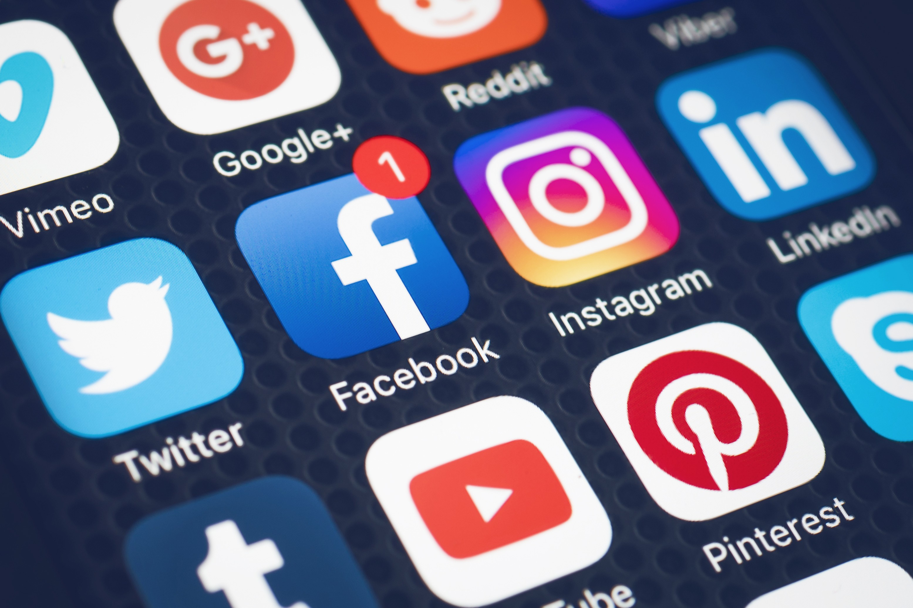
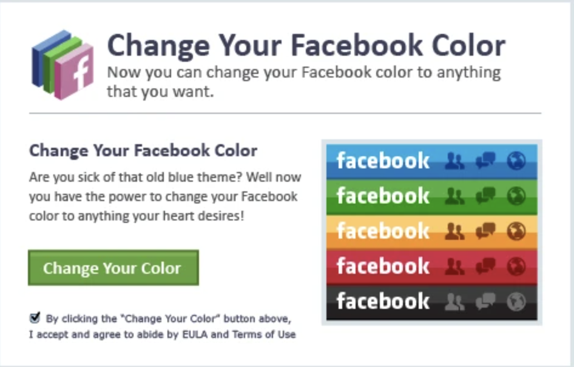
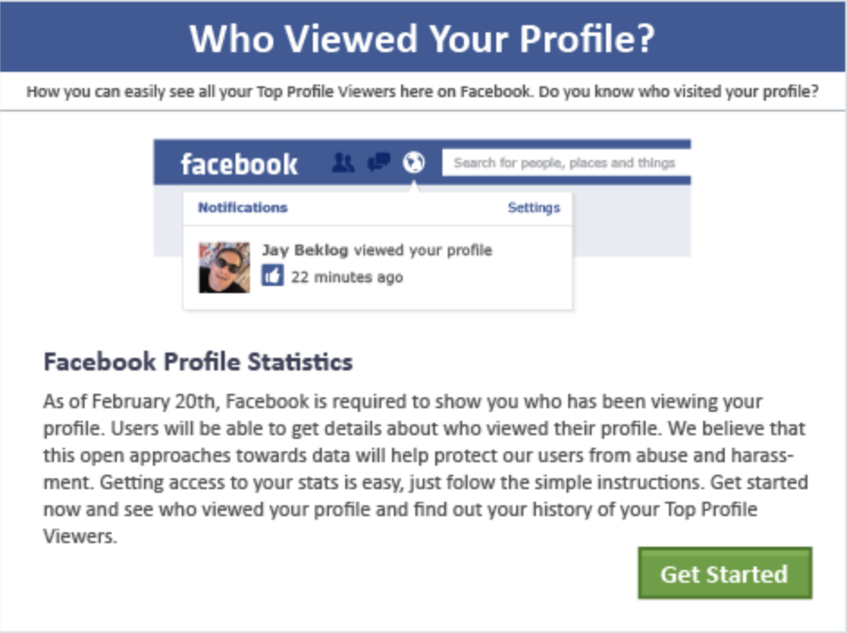

Social Media
Social Media Risks
To begin with, social media risks can be anything that compromises the safety of an account. Social media is considered as the easiest way for attackers to collect data and use them for their gain, since people usually give out their personal information to different social media platforms. Most common attacked social media platforms are Instagram, Facebook, Twitter, LinkedIn, and Snapchat.
Most attacks occur when users provide too much information about their lives, hence, attackers tends to target accounts with weak security because it wont take them that effort to do so.
Moving on, most social media threats come in the form of phishing messages. Attacker usually sends their vicitm an email or a tricky message, the vicitm then clicks an attached link that will send the attacker ensitive information, which could then be used to blackmail the user.
Some attackers intend to attack business. This is usually done through using LinkedIn, which is a social media platform. LinkedIn is the most used site for business networking. Attackers collect business email addresses in order to conduct a phishing attack. Attackers also gather information to collect money from the victims, through blackmailing them.
Moving on, the following images are common Facebook attacks that are still being used as phishing attacks.1- Facebook colour Changer
Facebook colour changer is a phishing attack, where it convince users to change the color theme of their account. When clicking the ad, the attacker obtains an access to you profile, allowing him to gain the needed information.
2- Who viewed your profile
The following scam appears as an ad or a message to users, which is a clever scheme, that would interest a lot of people, since many people are tempted to know who visited their profile. The scam appears legit, as it comes with the exact theme of Facebook.
How to Protect yourself
1- Be alert to the fact that many scams exists. You must take into consideration that if a message or an ad recieved from an anonymous looks too good, then it might be a scam.
2- Do not open suspicious emails, texts or links. If you are not sure about emails or anything stated, then you must do a small research through an independent source, or you may delete them.
3- Keep your personal details secure. Do not share any sensitive information to the public. Change your profile to only be seen by friends.
4- Two-factor authentication is a must, in order to regain access to your accounts if you get hacked. Also, do not use the same passwords for all platforms, as it is better to use a different password for every platform. Passowrds must not be common (ex. 12345, yourname123), as it must be difficult to be figured.